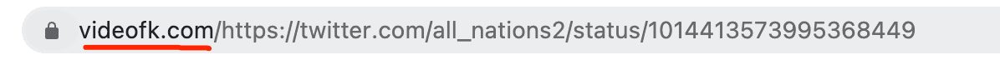

把刷到的视频存到手机——三分钟学会 VideoFK
第一次接触视频下载工具的小白也能看懂。从复制链接到第一次成功保存，跟着走一遍就会用。
这篇能带你从完全不懂到把视频存进相册，不需要任何技术基础。
它到底是干嘛的
你有没有过这种时刻：刷着刷着刷到一条特别喜欢的视频——可能是 TikTok 上的一条搞笑片段，可能是 Pinterest 上别人分享的创意教程——想保存下来慢慢看或者转发给朋友，但平台本身没有「下载」按钮，或者下载出来是带水印的。
VideoFK 就是专门解决这个痛点的。打个生活化的比方，它像一个「视频链接翻译器」：你把在任何平台复制到的视频链接扔给它，它帮你把链接背后的视频文件「翻译」成你手机能存、电脑能播的 MP4 文件，整个过程不需要登录、不需要装 App、也不用开会员。

它的官网上没有花哨的功能列表，打开就是一个搜索框和一个下载按钮——极简到像个搜索引擎，但背后支持的平台比你想的多得多。
五分钟上手：从复制到保存的最短路径
整个流程四步，跟煮泡面一样简单。
第一步：复制视频链接。 不管你在哪个平台看到的——TikTok、Pinterest、YouTube、Facebook、Instagram——点一下视频下方的分享按钮，找到「复制链接」这个选项，点它。链接会自动进你的剪贴板，你不用记也不用存。
第二步：打开 VideoFK 并粘贴。 在浏览器地址栏敲它的下载地址（手机上用 Safari 或 Chrome 都行，电脑上 Mac 自带的 Safari 完全兼容），进入页面后会看到中间一个大大的输入框。安卓手机长按输入框选「粘贴」，iPhone 双击选「粘贴」，电脑上直接按 Ctrl+V 或 Cmd+V。
第三步：点下载，等一秒。 粘贴完链接后，输入框旁边的按钮会变成可点击状态，点一下。VideoFK 会去对应平台抓取视频的真实地址，快的话一两秒、慢的话十几秒就能列出可选的格式和画质。
第四步：选格式，保存。 这一步会跳出一个小面板，让你挑格式和画质。新手直接选 MP4（下面会讲为什么），画质选最高那个就对了。点一下下载链接，视频文件会自动保存到你设备的默认下载目录——手机是「下载」文件夹，电脑是 Downloads 文件夹。
就这四步，没有第五步。第一次跑通之后，后面每次都一样，熟练了整个过程不超过 30 秒。
上手后先玩这三个功能
第一次成功下载之后，别着急到处用。先把这三个最有用的点摸透，以后遇到任何情况都能应付。
第一个：格式选择——什么时候选 MP4，什么时候选 WebM。 VideoFK 在可用时会给你三种格式：MP4、WebM 和 3GP。新手记住一个原则：不确定选什么就选 MP4。MP4 兼容性最广，微信、QQ、相册、QuickTime、VLC 全都能直接打开，不会出现「文件下载了但播不了」的尴尬。WebM 是一种更现代的开源格式，同画质下文件比 MP4 小 15-20%，适合你手机存储紧张的时候用——但前提是你装了 VLC 播放器，否则 iOS 原生相册可能不认。3GP 基本不用管，那是十年前翻盖手机时代的遗物，现在没人会碰到。
第二个：跨平台覆盖范围。 VideoFK 支持的平台远不止刚才举的例子。Pinterest 上的视频 Pin（不是纯图片的那种）、Instagram 的 Reels 和普通帖子视频、Facebook 的公共视频……只要那个视频是公开可访问、没有加密码或年龄限制的，大概率都能处理。唯一要注意的是 Pinterest 的图片 Pin——没有视频的 Pin 它处理不了，别白费劲复制链接。
第三个：Mac 用户的快捷操作。 如果你用 MacBook，整个流程还能再快三倍。粘贴链接直接按 Cmd+V，打开下载文件夹按 Cmd+Option+L，新建标签页按 Cmd+T。Mac 自带的 Safari 和 QuickTime 播放器全程够用，不需要额外装任何东西。如果你想知道每个平台具体支持哪些格式和画质档位，可以去文档里查，上面列了完整的兼容表和格式决策流程。
小白的三个常见疑问
跑过两三次之后，你大概率会碰到下面这三种情况，提前知道就不会慌。
为什么有些链接贴进去后提示无法处理？ 最常见的原因是视频有地区限制、已经被作者删掉了、或者是私密视频。地区限制是版权层面的硬约束，VideoFK 服务器不在你所在的地区就拉不到视频流；已删除的视频你自己在浏览器打开都会显示「不存在」，自然也下载不了；私密视频同理，作者没公开，任何第三方工具都拿不到。排查方法很简单：把链接自己先在浏览器里打开，能正常播放就是 VideoFK 这边的问题，不能播放就是链接本身的问题。
速度很慢怎么办？ 先别喊卡。VideoFK 的速度取决于两个东西：你的网络带宽，以及目标平台的反爬策略。如果是在深夜或周末高峰用，速度慢一点正常；如果某个平台一直很慢，可以先换个时间点再试。极少数情况下平台会触发速率限制（短时间内请求太多被临时封），等半个小时再回来就好。
下载的视频有水印吗？ 没有。VideoFK 抓取的是视频的原始文件流，不是平台带水印的播放页面，所以下载下来的文件是干净的。这也是它比手机上那些「水印去除器」好用的地方——那些工具本质上是录屏或截图，画质损失严重，而 VideoFK 拿到的是源文件。
写在最后
VideoFK 的文档里还有更细的参数说明和排查指南，比如地区限制的完整列表、各平台的格式支持情况，遇到特殊情况时翻一翻能省很多时间。但日常使用其实用不上那么多，记住「复制 → 粘贴 → 选 MP4 → 下载」这四步就够应付 90% 的场景了。
如果你下载的视频后面想做进一步处理——剪剪辑、加字幕、转格式——那是下一个阶段的事了。先用 VideoFK 把素材存下来，再慢慢折腾也不迟。
这套资料在三个仓库都能拿到，有需要可以随时翻找：GitHub上有完整的文档目录，Gitee适合国内网络环境访问，GitCode做了同步备份以防万一。